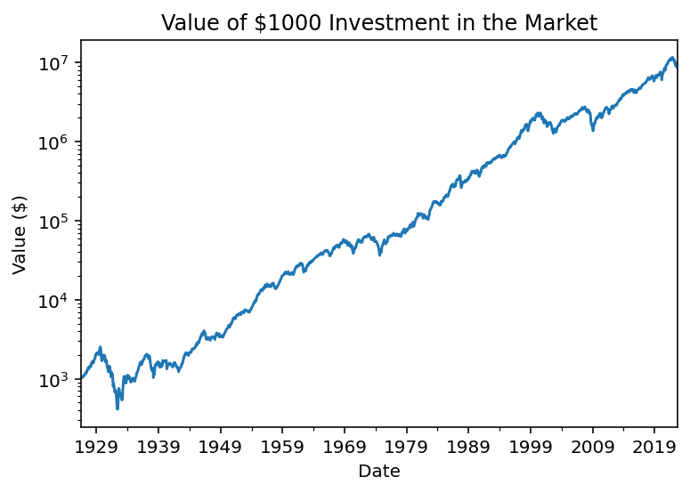
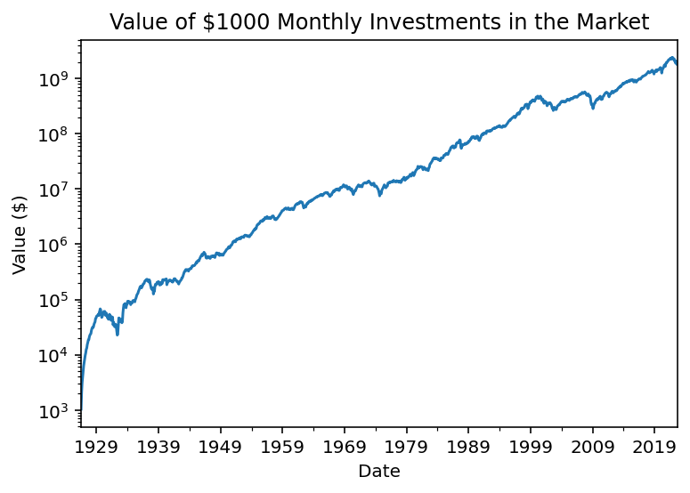

Consider only 1999 through today
Contents
import pandas as pd
import numpy as np
import matplotlib.pyplot as plt
import matplotlib as mpl
pd.set_option('display.float_format', '{:.4f}'.format)
%precision 4
%config InlineBackend.figure_format = 'retina'
import pandas_datareader as pdr
import requests_cache
session = requests_cache.CachedSession(expire_after='1D')
We can use () and .assign() to modify the Fama-French data in chained command.
ff = (
pdr.get_data_famafrench(
symbols='F-F_Research_Data_Factors', # get monthly FF factors
start='1900', # return all available data
session=session # use my cache file to reduce downloads
)[0] # slice the factor data frame
.div(100) # convert it to decimals
.assign(Mkt = lambda x: x['Mkt-RF'] + x['RF']) # calculate market return
[['Mkt', 'RF']] # slice only market return and risk-free rate
)
What is the cumulative value of $1000 invested in Mkt at the start of the Fama-French data?
ff['Mkt'].add(1).cumprod().mul(1000).plot()
plt.ylabel('Value ($)')
plt.title('Value of $1000 Investment in the Market')
plt.semilogy()
plt.show()

What is the cumulative value of $1000 invested in Mkt at the start of every month?
for date, (mkt, rf) in ff[['Mkt', 'RF']].iterrows(): # loop down the data frame of market returns
if date == ff.index[0]:
dca_bgn = 0
ff['dca_end'] = np.nan # not strictly necessary
dca_end = (dca_bgn + 1_000) * (1 + mkt)
ff.loc[date, 'dca_end'] = dca_end
dca_bgn = dca_end
ff['dca_end'].plot()
plt.ylabel('Value ($)')
plt.title('Value of $1000 Monthly Investments in the Market')
plt.semilogy()
plt.show()
